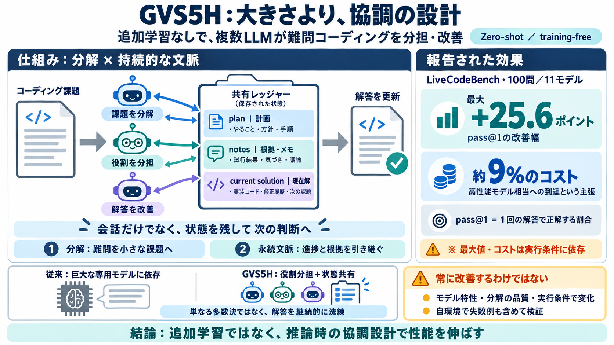

GVS5H: Zero-Shot Self-Orchestration with Ledger-Based Control Improves Coding in Language Models
Orchestrated Qwen3.8 Flash Next scores 93.0% against Fable 5’s 90.4% at 9% of the cost, while the smaller Qwen3.8-27B re…

GVS5H / Ledger
単一の巨大専用モデルに頼らず、推論時に複数LLMを自己オーケストレーション（役割分担）させて、難問コーディングを押し上げる手法。
高コスト問題
最先端のコーディング性能は「より大きい・高性能な専用モデル」で達成されがちです。するとコストと導入障壁が上がります。
大規模化＝計算・費用・運用が重い
trainingなしで推論設計を工夫し、同等級へ近づける
会話だけじゃない
ただのマルチエージェント会話ではなく、plan / notes / current solution を共有ファイルに残して“状況”を永続化します。
次に何をするかを分解して決める
根拠・方針・検討を蓄積し手戻りを減らす
進捗を“いまの正解候補”として更新する
推論時オーケストレーション
新しいインスタンスが問題を分解し、別インスタンスと連携して解答を改善します。追加学習（training）は行いません。
コーディング課題（LiveCodeBench難問）
分解（decomposition）＋永続コンテキスト
会話ではなく共有ストレージ（ledger）で 状態 を引き継ぐ
何が改善要因？
分析では、改善の理由を主に「分解」と「persistent context（持続的な文脈）」に求めています。
難問を手順・サブ課題に分け、探索を効率化する
plan/notes/current solution を残し、意思決定を更新し続ける
ベンチマーク結果
LiveCodeBench（難しめの実問題）100件に対し、開・閉モデル計11種類で評価。条件次第で最大25.6ポイントの改善が報告されています。
pass@1（1回で正解）
開・閉モデル 11種類
最大 +25.6 ポイント
Qwen3.8 Flash Next：Fable 5を 93.0% vs 90.4% でpass@1上回り
モデルより設計
高性能モデルへ近づける鍵は、モデルサイズよりも推論時の協調設計と状態共有にあります。単純な“より大きいモデル”戦略だけに頼らない発想です。
専用・巨大モデルを増やす
推論時に役割分担＋ledgerで進捗を共有
「Fable 5相当」への到達が 9%程度のコストで可能、という主張
投票ではない
単なる複数出力の投票ではなく、問題分解・plan/notes更新・現在解の継続更新で、手戻りを管理しながら協調します。
候補を並べて選ぶ中心
分解して進め、状態を残して洗練する
“いまどこまで出来たか”を共有し、次の判断の入力にする（会話より再利用性が高い）
再現のための実行
提示されている手順では uv とモデルAPIキーを用意し、multiagentエンジンでベンチ実行を回します。
uv／OPENAI_API_KEYなど
multiagentで escalation/run_bench.py
runs / results.json や workspaces 等に結果を保存
再現性の注意
改善は一部のモデルで出ない／変わらない／悪化するケースがあると明記されています。成功は分解品質と状態共有の噛み合わせに依存します。
向上しない可能性あり
分解・生成の安定性
ledgerの受け渡し方／モデル特性
“自分の設定で効くか”を失敗例も含めて検証する必要がある
ライセンス確認
コードはMIT、論文・図・実行データはCC BY 4.0とされています。ただしベンチ・テンプレ等は別ライセンスの可能性があるためNOTICE.mdで確認が安全です。
MIT
CC BY 4.0
LiveCodeBenchのフォーク、問題文、LaTeXテンプレ等は別条件のことがある
結論
GVS5Hは、training-freeの推論時オーケストレーションとledger-based状態共有で、難問コーディングのpass@1を押し上げる可能性を示します。
分解 × persistent context（持続的な文脈）で探索と更新を支える
改善は普遍ではない。モデル適合・実行条件の検証が必須
Orchestrated Qwen3.8 Flash Next scores 93.0% against Fable 5’s 90.4% at 9% of the cost, while the smaller Qwen3.8-27B re…
> Abstract. Frontier coding performance is typically bought with larger proprietary models at high cost. We introduce le…
> Abstract. Frontier coding performance is typically bought with larger proprietary models at high cost. We introduce le…
The repository states this in one italic line above the abstract: Opus 5 ran on an earlier version of the scaffold, in a…
| Arm | Cost per pass | Cost per solved problem | Accuracy | --- --- | | Frontier reference, single call (Claude Fable…